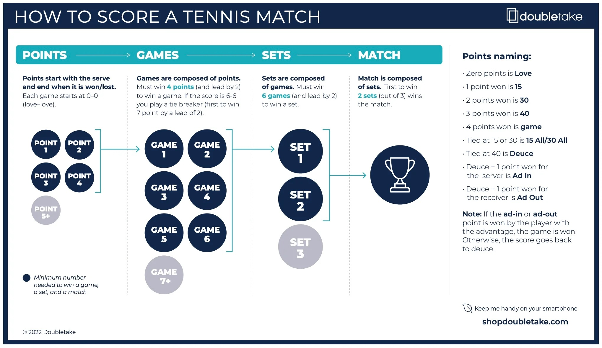
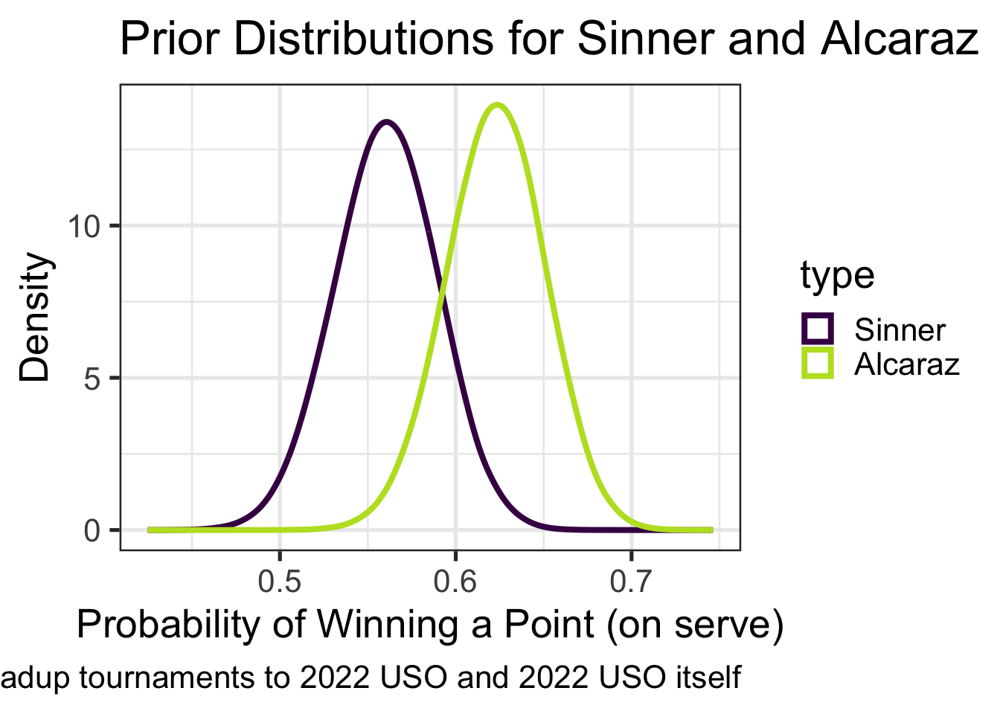
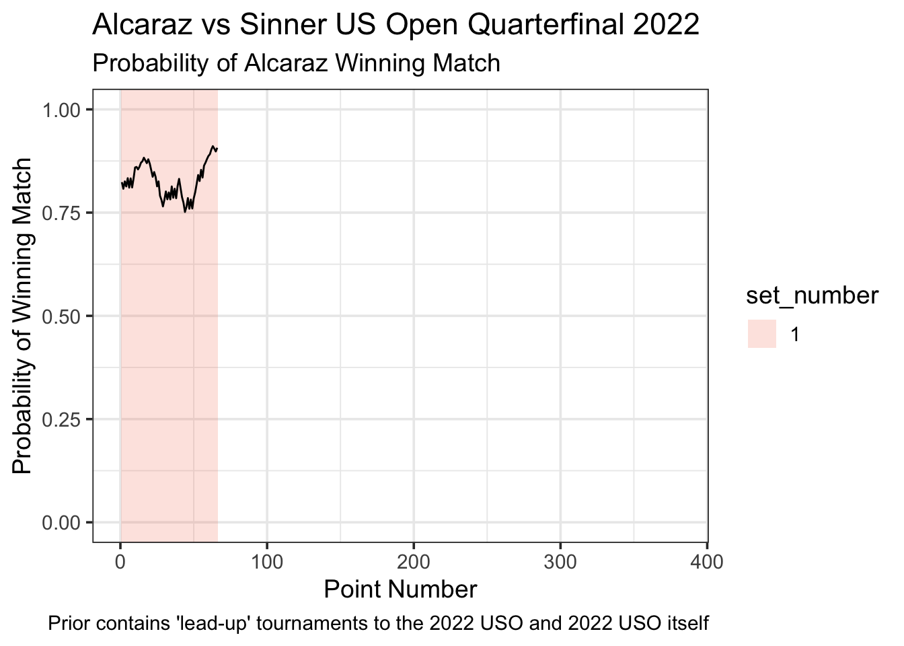
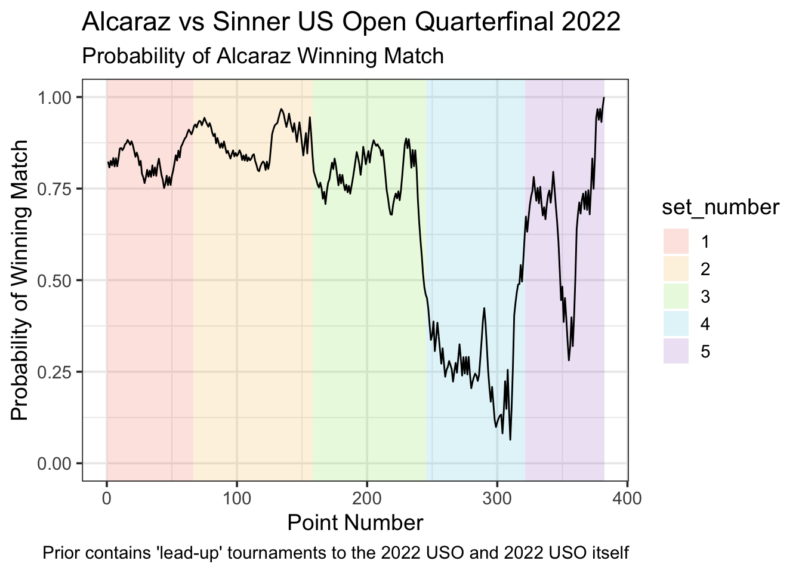
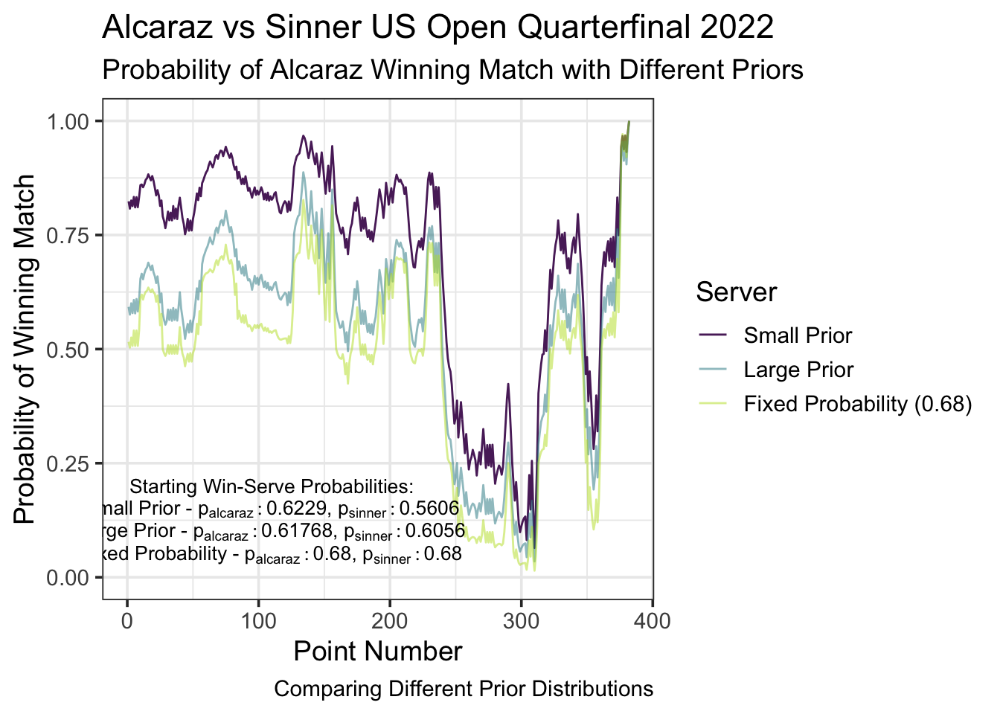

library(tidyverse)
library(compr)
library(broom)
library(dplyr)
library(readr)
library(deuce)
library(ggplot2)
library(knitr)
library(kableExtra)
library(pander)Project_Write_Up
Load in libraries
Source our functions
source("comp_prior_start.R")
source("bayes_intro.R")
source("wrangle_point_level_data.R")
source("create_prior.R")
source("get_probabilities_df.R")
source("get_plot_df.R")Want to work on suppressing these messages
ATP and WTA Professional Tennis: Calculating In-Match-Win Probability with Bayesian Modeling
This project explores the probabilities of professional tennis players winning matches. Tennis’ scoring format allows for huge momentum swings in a short amount of time, and we are going to explore how the probabilities that tennis players win a match are calculated and update throughout the match using Bayesian modeling. We will be using the probability that player1 wins a point on serve against player2, the probability that player2 wins a point on serve against player1, and the current score of the match of interest. We will explore the 2022 Men’s US Open Quarterfinal between Carlos Alcaraz and Jannik Sinner as an example. Alcaraz defeated Sinner in 5 sets, 6-3, 6-7(7), 6-7(0), 7-5, 6-3. We will also explore the 2023 Women’s US Open Final between Coco Gauff and Arnya Sabalenka. Gauff defeated Sabalenka in 3 sets, 2-6, 6-3, 6-2.
Tennis Scoring
The scoring format in tennis can be confusing to those that are not familiar with the sport. * The match starts with one player serving at 0-0 * The server is the player that hits the ball first in a point * The server alternates what side they serve from after every point * A game is played with the server serving for the entire game * A game is won by the first player to win 4 points, wining by a margin of 2 or more points * Sets are played first to 6 games, wining by a margin of 2 or more games * If the score reaches 6-6 in a set, a tiebreak is played * A tiebreak is won by the first player to win 7 points, wining by a margin of 2 or more points * A match is played to the best of 3 or 5 sets based on the tournament format
A graphic is attached below to help, and a more detailed write-up can be found on the doubletake website here.

Bayesian Modeling
In Bayesian modeling, we start with some existing beliefs about a parameter, which we call our prior distribution. We then observe new data come in and update our beliefs about the parameter based on the new data, which we call our posterior distribution.
In this project, our parameters of interest are the probabilities that player1 and player2 win a point on their serve. We calculate these probabilities using previous matches that have been played. As the match progresses, we update our beliefs about these probabilities of winning a point on serve, and at a specific state of the match, we can calculate the probability that either of the players wins the match. Choosing what matches we include in our prior distributions is important, as we want to include matches that are relevant to the match of interest.
Data
The data used in this project is from the ATP and WTA professional tennis tours, and is from Jeff Sackman’s tennis data on Github. There is point-level data on the ATP and WTA main-draw singles grand slam tournaments from 2011-present. There is also match-level data for ATP matches and match-level data for WTA matches. We will be using functions that handle reading in the data and wrangling it. Access to the data is needed to ensure correct spelling of player names and tournament names, the formatting of date ranges, the correct file paths, and match IDs for specific matches of interest.
Prior Distributions
We start with some prior beliefs about the probabilities that player1 and player2 win a point on serve. We use the data from previous matches to calculate these prior distributions. We will update these prior distributions as the match progresses.
When forming our prior beliefs, we are using a paired competition model. This means that we are using the data from the matches that player1 and player2 have played in, as well as other players that they have played against. For this to work, we need there to be some connection between player1 and player2 using matches they and other opponents have played (ie player1 has played against playera, who played against playerb, who played against player2).
We define \(Y_{ijk}\) to be a Bernoulli random variable equal to either: * \(1\) if player \(i\) wins the \(k^{th}\) point against player \(j\) * \(0\) if player \(i\) loses the \(k^{th}\) point against player \(j\)
Then \(\text{E}(Y_{ijk}) \equiv \pi_{ijk}\), the probability that Player \(i\) wins the \(k^{th}\) point against Player \(j\).
So we have: \[\text{logit}(\pi_{ijk}) = \beta_{alcaraz}X_{alcaraz} + \beta_{sinner}X_{sinner} + \ldots + \beta_{ruud}X_{ruud}\] Where \(X_{alcaraz}\) is equal to: * \(1\) if Alcaraz is player \(i\) on the \(k^{th}\) point * \(0\) if Alcaraz is neither player \(i\) nor player \(j\) on the \(k^{th}\) point * \(-1\) if Alcaraz is player \(j\) on the \(k^{th}\) point
and \(\beta_{alcaraz}\) represents a unitless “ability” of Alcaraz.
For an example, the log-odds of Carlos Alcaraz (player \(i\)) winning a point against Jannik Sinner (player \(j\)):
\[\begin{equation} \begin{aligned} \text{logit}(\pi_{ij}) & = \beta_{alcaraz}(1) + \beta_{sinner}(-1) + \ldots + \beta_{ruud}(0) \\ & = \beta_{alcaraz} - \beta_{sinner} \end{aligned} \end{equation}\]
We can then work on adding a serving effect:
\[\begin{equation} \begin{aligned} \text{logit}(\pi_{ijk}) = & \beta_{alcaraz}X_{alcaraz} + \beta_{sinner}X_{sinner} + \ldots + \beta_{ruud}X_{ruud} + \\ & \alpha_{alcaraz}X_{alcaraz,s} + \alpha_{sinner}X_{sinner,s} + \ldots + \alpha_{ruud}X_{ruud,s} \end{aligned} \end{equation}\]
Where \(X_{alcaraz,s}\) is equal to: * \(1\) if Alcaraz is the serving player \(i\) on point \(k\). * \(0\) if Alcaraz is the returning player on point \(k\) or if Alcaraz is neither player \(i\) nor player \(j\). * \(-1\) if Alcaraz is the serving player \(j\) on point \(k\)
And so we have \(\alpha_{alcaraz}\) representing a bump in point win probability for when Alcaraz serves compared to when he receives.
So as an example, the log-odds of Carlos Alcaraz (player \(i\)) winning a point against Jannik Sinner (player \(j\)) with Alcaraz serving on point \(k\) would be:
\[\begin{equation} \begin{aligned} \text{logit}(\pi_{ijk}) & = \beta_{alcaraz}(1) + \beta_{sinner}(-1) + \ldots + \beta_{ruud}(0) + \\ & \;\;\;\; \alpha_{alcaraz}(1) + \alpha_{sinner}(0) + \ldots + \alpha_{ruud}(0) \\ & = \beta_{alcaraz} + \alpha_{alcaraz} - \beta_{sinner} \end{aligned} \end{equation}\]
And as another example, the log-odds of Carlos Alcaraz (player \(i\)) winning a point against Jannik Sinner (player \(j\)) with Sinner serving on point \(k\) would be:
\[\begin{equation} \begin{aligned} \text{logit}(\pi_{ijk}) & = \beta_{alcaraz}(1) + \beta_{sinner}(-1) + \ldots + \beta_{ruud}(0) + \\ & \;\;\;\; \alpha_{alcaraz}(0) + \alpha_{sinner}(-1) + \ldots + \alpha_{ruud}(0) \\ & = \beta_{alcaraz} - \beta_{sinner} - \alpha_{sinner} \end{aligned} \end{equation}\]
We will use the data from the leadup tournaments to the 2022 US Open (hard court tournaments) and the rounds of the 2022 US Open before the quarterfinals to calculate these coefficients in the paired competition model. We can then calculate the probability that Alcaraz wins a point while serving against Sinner, and the probability that Sinner wins a point while serving against Alcaraz. With these estimated probabilities and standard deviations, we then create distributions for the prior probabilities of winning a point on serve for Alcaraz and Sinner.
NOTE Is it good idea to put in network diagram? The one I have that is clean is not applicable to this specific data, but could be nice to visualize? Can have diagram and some text explaining it…
So, to calculate the prior distributions of the probabilities that Alcaraz and Sinner win a point on serve, we will use our create_prior function. Note that this function’s outputs are on the log-odds scale, and contains the mean log-odds values for player1 and the standard deviations.
aug_mod_sin_small_prior <- create_prior(ext = c("atp_matches_2022.csv"),
tourn_name = "Us Open",
surf = "Hard",
start_date = "2022-07-25",
end_date = "2022-09-06",
player1 = "Jannik Sinner",
player2 = "Carlos Alcaraz",
ref_player = "Daniil Medvedev")
aug_mod_sin_small_prior |> kable()| player1 | player2 | p1_server | p2_server | .fitted | .se.fit |
|---|---|---|---|---|---|
| Jannik Sinner | Carlos Alcaraz | 1 | 0 | 0.2434863 | 0.1193404 |
| Jannik Sinner | Carlos Alcaraz | 0 | 1 | -0.5017383 | 0.1196950 |
So from the output, we see that Sinner has a mean value of winning a point while serving against Alcaraz of 0.2434863 with a standard error of 0.1193404, and both of these are on the log odds scale. This is indicated by p1_server being equal to 1 for this row. We can also see that Sinner has a mean value of winning a point while returning against Alcaraz of -0.5017383 with a standard error of 0.1196950, and again both on the log odds scale. To get the log odds of Alcaraz winning a point while serving against Sinner, we can negate the value of Sinner winning a point while returning against Alcaraz. We can then convert these from the log-odds scale to probabilities of winning a point on serve using the logistic function expit(). The logistic function transforms the log-odds to probabilities, ensuring that the probabilities fall within the range [0, 1].
# probability Sinner wins a point on serve
expit(0.2434863) # 0.5605726[1] 0.5605726# probability Sinner wins a point on return
expit(-0.5017383) # 0.3771322[1] 0.3771322# probability Alcaraz wins a point on serve
expit(0.5017383) # 0.6228678[1] 0.6228678# probability Alcaraz wins a point on return
expit(-0.2434863) # 0.4394274[1] 0.4394274From this prior we have created, we are estimating Sinner to win around 56.06% of points played on his serve against Alcaraz, and for Alcaraz to win around 62.29% of points played on his serve against Sinner.
We can then create distributions to visualize what these probabilities look like. We’ll start with our log odds and randomly generate 200,000 random samples from a normal distribution with mean log-odds from our prior and standard deviations from our prior.
# Save sinner log-odds and sd from prior as variables
prior_sin_logodds <- 0.2434863
prior_sin_sd_logodds <- 0.1193404
# generate random samples from normal distribution
prior_sin_df <- tibble::tibble(logodds = rnorm(200000,
prior_sin_logodds,
prior_sin_sd_logodds),
prob = expit(logodds))
# Save alcaraz log-odds and sd from prior as variables
prior_alc_logodds <- 0.5017383
prior_alc_sd_logodds <- 0.1196950
# generate random samples from normal distribution
prior_alc_df <- tibble::tibble(logodds = rnorm(200000,
prior_alc_logodds,
prior_alc_sd_logodds),
prob = expit(logodds))
# combine the two dfs and distinguish them by type
both_priors_df <- bind_rows(prior_sin_df, prior_alc_df, .id = "type") |>
mutate(type = fct_recode(type, "Sinner" = "1",
"Alcaraz" = "2"),
type = fct_relevel(type, c("Sinner", "Alcaraz")))
# plot the two prior distributions
ggplot(data = both_priors_df, aes(x = prob)) +
geom_density(aes(colour = type), adjust = 2,
linewidth = 1.4) + ## adjust smooths it out
scale_colour_viridis_d(end = 0.9) +
theme_minimal() +
labs(title = "Prior Distributions for Sinner and Alcaraz",
x = "Probability of Winning a Point (on serve)",
y = "Density",
caption = "Prior includes matches from leadup tournaments to 2022 USO and 2022 USO itself") +
theme_bw(base_size = 20)
From our prior distributions, we can see that Sinner’s probability of winning a point on serve against Alcaraz is around 0.57, and Alcaraz’s probability of winning a point on serve against Sinner is around 0.62. These are our starting probability distributions for the match. Based on their prior matches we have included, we think that Alcaraz has a higher probability of winning a point on his serve than Sinner does, but, there is some overlap in their prior distributions. As each point is played, we will update these probability distributions.
Prior, Data and Posterior
Now with our prior distributions for the probabilities that the players win a point while serving, we can observe how these probabilities update throughout the match by looking at a specific state of the match.
But first, we need to load in our data for the match between Alcaraz and Sinner. To do this, we will use our function wrangle_point_level(). This function returns a list of two data frames, and the order is determined by which player is listed as Player1 and Player2 for the match, and this can be found on Jeff Sackman’s Github. Look at either tennis_atp repo or tennis_wta repo, find the csv with the correct match year, and from this find the correct match-ID to use in the function, as well as determine which player is Player1 and Player2.
# returns list of two data frames
sin_alc_paired <- wrangle_point_level(ext = "2022-usopen-points.csv",
ID = "2022-usopen-1503")Rows: 47243 Columns: 65
── Column specification ────────────────────────────────────────────────────────
Delimiter: ","
chr (10): match_id, ElapsedTime, PointNumber, P1Score, P2Score, WinnerType, ...
dbl (38): SetNo, P1GamesWon, P2GamesWon, SetWinner, GameNo, GameWinner, Poin...
lgl (17): Rally, P1FirstSrvIn, P2FirstSrvIn, P1FirstSrvWon, P2FirstSrvWon, P...
ℹ Use `spec()` to retrieve the full column specification for this data.
ℹ Specify the column types or set `show_col_types = FALSE` to quiet this message.# first data frame corresponds to player1 (Sinner)
sin_serving <- sin_alc_paired[[1]]
# sescond data frame corresponds to player2 (Alcaraz)
alc_serving <- sin_alc_paired[[2]]We can look at a specific state of the match now that we have our data. For our Alcaraz and Sinner example, we also have their probabilities of winning a point on serve at the very start of the match. We can look at Sinner when he is serving at 40-15, 1-1 in the 3rd set (a little less than halfway through the match) and see how his probability of winning a point on serve has changed.
p1_serving_df <- sin_serving |> slice(1:150)
p1_serving_df |>
summarise(points_won = sum(PointWinner == 1),
points_played = n(),
prop_won = points_won / points_played) |>
kable()| points_won | points_played | prop_won |
|---|---|---|
| 89 | 150 | 0.5933333 |
At this state of the match, Sinner has played 150 points on his serve and won 89 of them, which is right around 0.6. We’d expect his updated distribution to shift towards 0.6, as his original probability was around 0.5606.
# get the number of rows in the data frame
p1_niter <- p1_serving_df |> nrow()
# create a storage vector for the probabilities
p1_prob_store <- double()
# create indicator if serving player won the point
p1_serving <- p1_serving_df |>
mutate(server_won = ifelse(PointWinner == 1, 1, 0))
# Use a bayesian generalized linear model to update our prior distribution
mod <- stan_glm(server_won ~ 1, data = p1_serving |> slice(1:p1_niter),
family = binomial,
prior_intercept = normal(prior_sin_logodds, prior_sin_sd_logodds),
seed = 123)
# get the posterior distribution
tibble_mod <- as_tibble(mod) |>
mutate(prob = expit(`(Intercept)`)) |>
rename(logodds = `(Intercept)`)
# bind tibble_mod and our prior for sinner, which was created in the chunk plotting
# both prior distributions for sinner and alcaraz
plot_df <- bind_rows(tibble_mod, prior_sin_df, .id = "type") |>
mutate(type = fct_recode(type, "posterior" = "1",
"prior" = "2"),
type = fct_relevel(type, c("prior", "posterior")))
# plot both the prior and the updated prior
ggplot(data = plot_df, aes(x = prob)) +
geom_density(aes(linetype = type), adjust = 2,
linewidth = 0.9) + ## adjust smooths it out
theme_minimal() +
labs(title = "Prior and Posterior Distributions at Specific Match State",
subtitle = "Sinner serving at 40-15, 1-1, 3rd set",
x = "Sinner's Probability of Winning a Point (on serve)",
y = "Density",
caption = "Sinner: 89/150 points won on serve") +
coord_cartesian(ylim = c(0, 17)) +
theme_bw(base_size = 22)We can see that Sinner’s probability distribution of winning a point on serve when he is serving at 40-15, 1-1 in the 3rd set has shifted from the prior distribution, closer to 0.6.
Caclulating In-Match-Win Probability
With the probabilities of both players winning a point on their serve, we can calculate the probability of either player winning the entire match. We can do this by simulating the match point by point, and updating the probabilities of the players winning a point on serve as each successive point is played. For a current state of the match, we have the updated probabilities of each player winning a point on serve, and the score at that state of the match, and using these we can calculate the overall probability of winning the match.
For our example, we will explore the probability that Alcaraz wins the match.
First, we need to calculate the probabilities of Alcaraz and Sinner winning a point on serve after each successive point is played. To do this, we will use our get_probabilities_df() function. This function takes in the data frames of the players’ serving points, the players’ names, the players’ original probabilities of winning a point on serve, and the players’ original standard errors. Before, we looked at Sinner’s updated probability distribution of winning a point on serve at a specific state of the match. Now, we will loop through every single point of the match and obtain updated probabilities of the two players winning a point on serve after each successive point. It is worth noting that as Alcaraz serves multiple points in a row, Sinner’s probability of winning a point on serve does not change as there is no new data we are observing that would update his probability. Our output is a dataframe that contains the probabilities of the two players winning a point on serve which is updated after each successive point.
Make note here of how we have both the mean probabilities and also have the distribution centers from sampling saved in this df, can then later choose which to use
combined_prob_sin_alc_sp_df <- get_probabilities_df(p1_serving_df = sin_serving,
p2_serving_df = alc_serving,
p1 = "Jannik Sinner",
p2 = "Carlos Alcaraz",
p1_original_prob = 0.2434863,
p1_original_se = 0.1193404,
p2_original_prob = 0.5017383,
p2_original_se = 0.1196950)We can now use the probabilities of the two players winning a point on serve to calculate the overall probability of the players winning the match. We will simulate the match point by point, updating the probabilities of the players winning a point on serve as each point is played, and for each specific state of the match and probabilities of the players winning a point on serve, we can calculate the overall probability of a player to win the overall match. We will use the get_plot_df() function to do this.
plot_sin_alc_small_prior <- get_plot_df(combined_df = combined_prob_sin_alc_sp_df,
which_player_prob = 2,
best_of_3 = FALSE,
advantage = FALSE,
type = "distribution") |>
mutate(set_number = as.factor(as.numeric(total_sets))) |>
# fix last row in data set where set_number is 6, should be a 5
mutate(set_number = ifelse(pt_number == max(pt_number), '5', set_number)) |>
mutate(set_number = as.factor(set_number))We can choose how many sets we want to display on our graph.
# create fills to color sets by
fills <- c("#F57A5C", "#F5C25C", "#94E25B", "#69CEE0", "#A875CE")Here, we can look at just the first set of the match:
# filter for just the first set
plot_first_set_sin_alc <- plot_sin_alc_small_prior |>
filter(set_number == 1)
# create the boundaries for the sets
first_set_boundaries_alc_sin_small_prior <- plot_sin_alc_small_prior |>
group_by(set_number) |>
summarize(xmin = min(pt_number) - 0.5,
xmax = max(pt_number) + 0.5) |>
filter(set_number == 1)
# plot
plot_sin_alc_small_prior |> ggplot(aes(x = pt_number, y = probability)) +
geom_rect(data = first_set_boundaries_alc_sin_small_prior, aes(x = NULL, y = NULL, xmin = xmin, xmax = xmax,
ymin = -Inf, ymax = Inf, fill = set_number), alpha = 0.2) +
geom_line(data = plot_first_set_sin_alc, aes(y = win_prob_px)) +
labs(x = "Point Number",
y = "Probability of Winning Match",
title = "Alcaraz vs Sinner US Open Quarterfinal 2022",
subtitle = "Probability of Alcaraz Winning Match",
caption = "Prior contains 'lead-up' tournaments to the 2022 USO and 2022 USO itself",
color = "Server") +
coord_cartesian(ylim = c(0, 1),
xlim = c(0, nrow(plot_sin_alc_small_prior))) +
scale_fill_manual(values = fills[1]) +
theme_bw(base_size = 14)
Add comments on the graph here, dips and peaks, etc… maybe talk about updated probabilities of winning a point on serve now too after the first set?
We can choose to include all of the sets to plot the entire match:
# not necessary here since we are plotting all sets, but included anyway
plot_five_sets_sin_alc <- plot_sin_alc_small_prior |>
filter(set_number == 1 | set_number == 2 | set_number == 3 | set_number == 4 | set_number == 5)
# create the boundaries for the sets
five_set_boundaries_alc_sin_small_prior <- plot_sin_alc_small_prior |>
group_by(set_number) |>
summarize(xmin = min(pt_number) - 0.5,
xmax = max(pt_number) + 0.5) |>
filter(set_number == 1 | set_number == 2 | set_number == 3 | set_number == 4 | set_number == 5)
# plot
plot_sin_alc_small_prior |> ggplot(aes(x = pt_number, y = probability)) +
geom_rect(data = five_set_boundaries_alc_sin_small_prior, aes(x = NULL, y = NULL, xmin = xmin, xmax = xmax,
ymin = -Inf, ymax = Inf, fill = set_number), alpha = 0.2) +
geom_line(data = plot_five_sets_sin_alc, aes(y = win_prob_px)) +
labs(x = "Point Number",
y = "Probability of Winning Match",
title = "Alcaraz vs Sinner US Open Quarterfinal 2022",
subtitle = "Probability of Alcaraz Winning Match",
caption = "Prior contains 'lead-up' tournaments to the 2022 USO and 2022 USO itself",
color = "Server") +
coord_cartesian(ylim = c(0, 1),
xlim = c(0, nrow(plot_sin_alc_small_prior))) +
scale_fill_manual(values = fills[1:5]) +
theme_bw(base_size = 14)
Add comments on the graph here, dips and peaks, etc….
Changing Prior Distributions
We can change what matches we include in our prior distributions and see how this affects our probabilities of each player winning a point on serve at the start of the match. With these different probabilities of winning a point on serve, we can see how the overall probability of winning the match changes.
Let’s explore what happens if we change the prior distribution to a larger prior. Let’s include all hard court matches over the entire last year before the 2022 US Open. So, now all our matches include the 2021 US Open and all hard court matches played between then and the quarterfinal round of the 2022 US Open. We will see how this changes the probabilities of Alcaraz and Sinner winning points on serve, and see how this changes the overall probability of Alcaraz winning the match.
We will again use our create_prior function to calculate these values on the log-odds scale.
aug_mod_sin_large_prior <- create_prior(ext = c("atp_matches_2021.csv",
"atp_matches_2022.csv"),
tourn_name = "Us Open",
surf = "Hard",
start_date = "2021-08-30",
end_date = "2022-09-06",
player1 = "Jannik Sinner",
player2 = "Carlos Alcaraz",
ref_player = "Novak Djokovic")
aug_mod_sin_large_prior |> kable()So from the output, we see that Sinner has a mean value of winning a point while serving against Alcaraz of 0.4288085 with a standard error of _______, and both of these are on the log odds scale. We can also see that Sinner has a mean value of winning a point while returning against Alcaraz of -0.4795682 with a standard error of ______, and again both on the log odds scale. To get the log odds of Alcaraz winning a point while serving against Sinner, we can negate the value of Sinner winning a point while returning against Alcaraz. We can then convert these from the log-odds scale to probabilities of winning a point on serve using the logistic function expit(). The logistic function transforms the log-odds to probabilities, ensuring that the probabilities fall within the range [0, 1].
# probability Sinner wins a point on serve
expit(0.4288085) # 0.6055891[1] 0.6055891# probability Sinner wins a point on return
expit(-0.4795682) # 0.3823541[1] 0.3823541# probability Alcaraz wins a point on serve
expit(0.4795682) # 0.6176459[1] 0.6176459# probability Alcaraz wins a point on return
expit(-0.4288085) # 0.3944109[1] 0.3944109We can then calculate the probabilities of them winning a point on their serve throughout the entire match, updating after each point. We will use our get_probabilities_df() function.
NOTE still running code through and want to double check numbers input into this function below
combined_prob_alc_sin_lp_df <- get_probabilities_df(p1_serving_df = sin_serving,
p2_serving_df = alc_serving,
p1 = "Jannik Sinner",
p2 = "Carlos Alcaraz",
p1_original_prob = 0.4288085,
p1_original_se = 0.04919170,
p2_original_prob = 0.4795682,
p2_original_se = 0.04971023)Using the probabilities of the two players winning a point on serve and the current score of the match as we feed it in, we can calculate the overall probability of winning the match.
plot_sin_alc_large_prior <- get_plot_df(combined_df = combined_prob_alc_sin_lp_df,
which_player_prob = 2,
best_of_3 = FALSE,
advantage = FALSE,
type = "distribution") |>
mutate(set_number = as.factor(as.numeric(total_sets))) |>
# fix last row in data set where set_number is 6, should be a 5
mutate(set_number = ifelse(pt_number == max(pt_number), '5', set_number)) |>
mutate(set_number = as.factor(set_number))Warning: `unnest()` has a new interface. See `?unnest` for details.
ℹ Try `df %>% unnest(c(server.prob, returner.prob))`, with `mutate()` if
needed.
`unnest()` has a new interface. See `?unnest` for details.
ℹ Try `df %>% unnest(c(server.prob, returner.prob))`, with `mutate()` if
needed.NOTE Still making more revisions here and tidying up.
For our example, we will explore the effect of changing the prior distributions on the probability of Alcaraz winning the match. We have our original prior distribution we used, labeled “Small Prior”, and it included the lead-up tournaments to the 2022 US Open and the 2022 US Open itself. We will compare this to a “Large Prior” distribution that includes all hard court matches from the 2021 US Open to the 2022 US Open itself. We can also fix the probabilities of Sinner and Alcaraz winning a point on serve at a specific value, such as 0.68 (around tour average).
combined_prob_alc_sin_lp_df <- get_probabilities_df(p1_serving_df = sin_serving,
p2_serving_df = alc_serving,
p1 = "Jannik Sinner",
p2 = "Carlos Alcaraz",
p1_original_prob = 0.4288085,
p1_original_se = 0.04919170,
p2_original_prob = 0.4795682,
p2_original_se = 0.04971023)
plot_sin_alc_large_prior <- get_plot_df(combined_df = combined_prob_alc_sin_lp_df,
which_player_prob = 2,
best_of_3 = FALSE,
advantage = FALSE,
type = "distribution") |>
mutate(set_number = as.factor(as.numeric(total_sets))) |>
# fix last row in data set where set_number is 6, should be a 5
mutate(set_number = ifelse(pt_number == max(pt_number), '5', set_number)) |>
mutate(set_number = as.factor(set_number))
sin_serving_fp <- sin_serving |>
mutate(player1 = "Jannik Sinner",
player2 = "Carlos Alcaraz") |>
# also create indicator if serving player won the point
mutate(server_won = ifelse(PointWinner == 1, 1, 0))
alc_serving_fp <- alc_serving |>
mutate(player1 = "Jannik Sinner",
player2 = "Carlos Alcaraz") |>
# also create indicator if serving player won the point
mutate(server_won = ifelse(PointWinner == 2, 1, 0))
combined_sin_alc_fixed_df <- bind_rows(sin_serving_fp, alc_serving_fp) |>
arrange(pt_number) |>
mutate(p1_wserv_prob = 0.68,
p2_wserv_prob = 0.68) |>
mutate(P1SetsWon = cumsum(SetWinner == 1),
P2SetsWon = cumsum(SetWinner == 2)) |>
select(pt_number, player1, player2, PointServer, p1_wserv_prob, p2_wserv_prob,
P1PointsWon, P2PointsWon, P1GamesWon, P2GamesWon, P1SetsWon, P2SetsWon) |>
mutate(PointServer = case_when(P1PointsWon == 0 & P2PointsWon == 0 & PointServer == 1 ~ 2,
P1PointsWon == 0 & P2PointsWon == 0 & PointServer == 2 ~ 1,
TRUE ~ PointServer))
plot_sin_alc_fixed_prior <- get_plot_df(combined_df = combined_sin_alc_fixed_df,
which_player_prob = 2,
best_of_3 = FALSE,
advantage = FALSE,
type = "mean") |>
mutate(set_number = as.factor(as.numeric(total_sets))) |>
# fix last row in data set where set_number is 6, should be a 5
mutate(set_number = ifelse(pt_number == max(pt_number), '5', set_number)) |>
mutate(set_number = as.factor(set_number))plot_sin_alc_small_prior |> ggplot(aes(x = pt_number, y = probability)) +
geom_line(aes(y = win_prob_px,
color = factor("Small Prior", levels = c("Small Prior", "Large Prior", "Fixed Probability"))),
alpha = 0.9) +
geom_line(data = plot_sin_alc_large_prior, aes(y = win_prob_px, color = "Large Prior"), alpha = 0.5) +
geom_line(data = plot_sin_alc_fixed_prior, aes(y = win_prob_px, color = "Fixed Probability (0.68)"), alpha = 0.5) +
labs(x = "Point Number",
y = "Probability of Winning Match",
title = "Alcaraz vs Sinner US Open Quarterfinal 2022",
subtitle = "Probability of Alcaraz Winning Match with Different Priors",
caption = "Comparing Different Prior Distributions",
color = "Server") +
scale_color_manual(values = c("Small Prior" = "red", "Large Prior" = "blue", "Fixed Probability" = "green"),
labels = c("Small Prior", "Large Prior", "Fixed Probability (0.68)")) +
coord_cartesian(ylim = c(0, 1),
xlim = c(0, nrow(plot_sin_alc_small_prior))) +
scale_colour_viridis_d(end = 0.9) +
theme_bw(base_size = 14) +
annotate("text", x = 110, y = 0.2, label = "Starting Win-Serve Probabilities:", size = 3.5, color = "black") +
annotate("text", x = 110, y = 0.15,
label = paste0("'Small Prior - '*p[alcaraz]: 0.6229*', '*p[sinner]: 0.5606"), size = 3.5, color = "black",
parse = TRUE) +
annotate("text", x = 110, y = 0.1,
label = paste0("'Large Prior - '*p[alcaraz]: 0.61768*', '*p[sinner]: 0.6056"), size = 3.5, color = "black",
parse = TRUE) +
annotate("text", x = 110, y = 0.05,
label = "'Fixed Probability - '*p[alcaraz]: 0.68*', '*p[sinner]: 0.68", size = 3.5, color = "black",
parse = TRUE)Scale for colour is already present.
Adding another scale for colour, which will replace the existing scale.
Using different size priors changes the probabilities of Alcaraz and Sinner winning a point on their serve at the start of the match, and lead to different probabilities of Alcaraz winning the overall match.
Appendix
Reading in Match data
Function that reads in ATP and WTA match data from Jeff Sackmann’s GitHub repository.
Inputs: * ext: extension of the file to read in. Must start with ‘atp’ or ‘wta’
Output: * Data frame with data on matches from the specified extension
read_matches <- function(ext = "atp_matches_2022.csv") {
if (substr(ext, 1, 3) == "atp") {
url <- paste0("https://raw.githubusercontent.com/JeffSackmann/tennis_atp/master/", ext)
} else if (substr(ext, 1, 3) == "wta") {
url <- paste0("https://raw.githubusercontent.com/JeffSackmann/tennis_wta/master/", ext)
} else {
stop("Invalid extension. Extension must start with 'atp' or 'wta'.")
}
df <- readr::read_csv(url, col_types = list(match_num = col_character())) |>
mutate(winner_seed = as.numeric(winner_seed)) |>
mutate(loser_seed = as.numeric(loser_seed))
return(df)
}Creating Prior Distributions
Function that creates prior distributions of player probabilities of winning a point on serve at the start of a match.
Inputs: * ext: extension of the file to read in. Must start with ‘atp’ or ‘wta’. * tourn_name: name of the tournaments to include in prior * surf: surface of the tournaments to include in prior * start_date: start date of the tournaments to include in prior * end_date: end date of the tournaments to include in prior * player1: name of player 1 * player2: name of player 2 * ref_player: name of reference player
Output: * Data frame with: - probability of player1 winning a point on serve at the start of the match - sd of the probability of player1 winning a point on serve at the start of the match - probability of player1 winning a point on return at the start of the match - sd of the probability of player1 winning a point on return at the start of the match * Note that the probabilities and sd are on the log odds scale * Note that we can calculate the probability of player2 winning a point on serve at the start of the match by subtracting the probability of player1 winning a point on return at the start of the match from 1
create_prior <- function(ext = c("atp_matches_2021.csv",
"atp_matches_2022.csv"),
tourn_name = "Us Open",
surf = "Hard",
start_date = "2021-08-30",
end_date = "2022-09-06",
player1 = "Jannik Sinner",
player2 = "Carlos Alcaraz",
ref_player = "Novak Djokovic") {
matches <- purrr::map(ext, read_matches) |>
bind_rows() |>
mutate(round = case_when(round == "F" ~ 2,
round == "SF" ~ 4,
round == "QF" ~ 8,
round == "R16" ~ 16,
round == "R32" ~ 32,
round == "R64" ~ 64,
round == "R128" ~ 128,
.default = NA)) ## covers RR matches
## figure out match of interest based on players and tourn_name
match_of_interest <- matches |> filter(tourney_name == tourn_name) |>
filter((winner_name == player1 | winner_name == player2) &
(loser_name == player1 | loser_name == player2))
## return an error if a player or tournament is misspelled or
## the match-up did not happen for that particular tournament
if (nrow(match_of_interest) < 1) {
stop("There is no match for the specified players and tournament.")
} else if (nrow(match_of_interest) > 1) {
stop("There is more than one match for the specified players and tournament.")
}
## grab the round from the match of interest
round_of_interest <- match_of_interest |> pull(round)
# filter for relevant matches
prior <- matches |>
mutate(tourney_date = lubridate::ymd(tourney_date)) |>
filter((tourney_name == tourn_name | surface == surf) &
(tourney_date <= lubridate::ymd(end_date) & tourney_date >= lubridate::ymd(start_date))) |>
## add a filter to remove matches beyond the match of interest
filter((tourney_name != tourn_name) |
(tourney_name == tourn_name & lubridate::year(tourney_date) != lubridate::year(end_date)) |
(tourney_name == tourn_name & round > round_of_interest))
prior_points <- prior |>
select(1:3,6,7,9,11,17,19,24,30,32,33,39,41,42,46,48) |>
mutate(w_svpt_w = w_1stWon + w_2ndWon,
w_svpt_l = w_svpt - w_svpt_w,
l_svpt_w = l_1stWon + l_2ndWon,
l_svpt_l = l_svpt - l_svpt_w) |>
select(winner_name, loser_name, w_svpt_w, w_svpt_l, l_svpt_w, l_svpt_l, match_num,
1:5, 7, 9, 16:17) |>
pivot_longer(cols = c("w_svpt_w", "w_svpt_l", "l_svpt_w", "l_svpt_l"),
names_to = "won_point",
values_to = "server") |>
mutate(pt_winner = recode(
won_point,
"w_svpt_w" = 1,
"w_svpt_l" = 0,
"l_svpt_w" = 0,
"l_svpt_l" = 1)) |>
mutate(pt_server = recode(
won_point,
"w_svpt_w" = 1,
"w_svpt_l" = 1,
"l_svpt_w" = 0,
"l_svpt_l" = 0)) |>
# remove rows where server is NA (walkovers)
filter(!is.na(server))
prior_points_uncount <- uncount(prior_points, weights = as.numeric(server)) |>
mutate(p1_server = ifelse(pt_server == 1, 1, 0),
p2_server = ifelse(pt_server == 0, 1, 0)) |>
# reorganize columns
select(winner_name, loser_name, pt_winner, p1_server, p2_server, everything()) |>
rename(player1 = winner_name, player2 = loser_name)
# Now fit the model to your point data with serving effects
comp_mod <- comp_glm(pt_winner ~ -1, data = prior_points_uncount,
p1 = "player1", p2 = "player2",
p1_effects = ~ p1_server, p2_effects = ~ p2_server,
ref_player = ref_player)
match_data <- data.frame(
player1 = (player1),
player2 = (player2),
p1_server = c(1, 0),
p2_server = c(0, 1))
aug_mod <- aug_mod(comp_mod, newdata = match_data)
return(aug_mod)
}Reading in Point-by-Point data
Function that reads in point-by-point data from Jeff Sackmann’s GitHub repository for a specific match of interest.
Inputs: * ext: extension of the file to read in, tournament that contains the match of interest * ID: match ID of the match to read in
Outputs: * Data frame with the point-by-point data for the specified match with player1 serving * Data frame with the point-by-point data for the specified match with player2 serving
library(rstanarm)
wrangle_point_level <- function(ext = "2022-usopen-points.csv",
ID = "2022-usopen-1503") {
df <- readr::read_csv(paste0("https://raw.githubusercontent.com/JeffSackmann/tennis_slam_pointbypoint/master/",
ext))
df <- df |> dplyr::filter(match_id == ID) |>
dplyr::mutate(P1GamesWon = ifelse(SetWinner != 0, 0, P1GamesWon),
P2GamesWon = ifelse(SetWinner != 0, 0, P2GamesWon)) |>
filter(PointWinner != 0)
df <- df |> select(PointWinner,
P1Score,
P2Score,
P1GamesWon,
P2GamesWon,
SetWinner,
PointServer) |>
mutate(P1Score = ifelse(P1Score == "AD", 4, P1Score),
P2Score = ifelse(P2Score == "AD", 4, P2Score),
P1PointsWon = as.numeric(P1Score),
P2PointsWon = as.numeric(P2Score)) |>
mutate(P1PointsWon = case_when(P1Score == 0 ~ 0,
P1Score == 15 ~ 1,
P1Score == 30 ~ 2,
P1Score == 40 ~ 3,
TRUE ~ P1PointsWon),
P2PointsWon = case_when(P2Score == 0 ~ 0,
P2Score == 15 ~ 1,
P2Score == 30 ~ 2,
P2Score == 40 ~ 3,
TRUE ~ P2PointsWon)) |>
mutate(pt_number = row_number())
p1_serving <- df |> filter(PointServer == 1)
p2_serving <- df |> filter(PointServer == 2)
return(list(p1_serving, p2_serving))
}Getting Probabilities of Winning Point on Serve Throughout the Match
Function that calculates the probabilities of winning a point on serve for each player throughout the match.
MAKE NOTE OF stan_glm from compr / comp_prior_start.R
Inputs: * p1_serving_df: data frame with point-by-point data for player1 serving from match of interest * p2_serving_df: data frame with point-by-point data for player2 serving from match of interest * p1: name of player1 * p2: name of player2 * p1_original_prob: original probability of player1 winning a point on serve (from create_prior, on log odds scale) * p1_original_se: original standard error of player1 winning a point on serve (from create_prior, on log odds scale) * p2_original_prob: original probability of player2 winning a point on serve (from create_prior, on log odds scale) * p2_original_se: original standard error of player2 winning a point on serve (from create_prior, on log odds scale)
Output: * Data frame with point-level data and probabilities of winning a point on serve for each player throughout the match
get_probabilities_df <- function(p1_serving_df = sin_serving,
p2_serving_df = alc_serving,
p1 = "Jannik Sinner",
p2 = "Carlos Alcaraz",
p1_original_prob = 0.4288085,
p1_original_se = 0.04919170,
p2_original_prob = 0.4795682,
p2_original_se = 0.04971023) {
p1_niter <- p1_serving_df |> nrow()
p1_prob_store <- double()
## create empty list to store posterior samples
p1_prob_store_list <- list()
p1_serving <- p1_serving_df |>
mutate(player1 = p1,
player2 = p2) |>
# also create indicator if serving player won the point
mutate(server_won = ifelse(PointWinner == 1, 1, 0))
for (i in 1:p1_niter) {
mod <- stan_glm(server_won ~ 1, data = p1_serving |> slice(1:i),
family = binomial,
prior_intercept = normal(p1_original_prob, p1_original_se),
seed = 123)
p1_prob_store[i] <- coef(mod) |> expit()
p1_prob_store_list[[i]] <- as_tibble(mod) |> expit() ## grab posterior samples
}
p1_serving <- p1_serving |>
mutate(p1_wserv_prob = p1_prob_store,
p1_wserv_prob_list = p1_prob_store_list)
## can have a column in a data frame that is a column of lists
## each row has a list of 4000 posterior samples
p2_niter <- p2_serving_df |> nrow()
p2_prob_store <- double()
p2_prob_store_list <- list()
p2_serving <- p2_serving_df |>
mutate(player1 = p1,
player2 = p2) |>
# also create indicator if serving player won the point
mutate(server_won = ifelse(PointWinner == 2, 1, 0))
for (i in 1:p2_niter) {
mod <- stan_glm(server_won ~ 1, data = p2_serving |> slice(1:i),
family = binomial,
prior_intercept = normal(p2_original_prob, p2_original_se),
seed = 123)
p2_prob_store[i] <- coef(mod) |> expit()
p2_prob_store_list[[i]] <- as_tibble(mod) |> expit()
}
p2_serving <- p2_serving |>
mutate(p2_wserv_prob = p2_prob_store,
p2_wserv_prob_list = p2_prob_store_list)
# combine the data frames and arrange by pt_number
combined_df <- bind_rows(p1_serving, p2_serving) |>
arrange(pt_number) |>
select(pt_number, player1, player2, PointServer, PointWinner, server_won,
p1_wserv_prob, p2_wserv_prob,
p1_wserv_prob_list, p2_wserv_prob_list,
everything())
# Fill in the missing probabilities with the previously known probability
# for the list column, fill in the missing probabilities for the first
# match with a sample from the prior
if (combined_df$PointServer[1] == 1) {
combined_df[1, "p2_wserv_prob"] <- p2_original_prob |> expit()
combined_df[1, "p2_wserv_prob_list"][[1]] <- rnorm(4000, p2_original_prob,
p2_original_se) |> expit() |>
as_tibble() |> rename(`(Intercept)` = value) |> list()
} else {
combined_df[1, "p1_wserv_prob"] <- p1_original_prob |> expit()
combined_df[1, "p1_wserv_prob_list"][[1]] <- rnorm(4000, p1_original_prob,
p1_original_se) |> expit() |>
as_tibble() |> rename(`(Intercept)` = value) |> list()
}
combined_filled <- combined_df |>
fill(p1_wserv_prob, p2_wserv_prob,
p1_wserv_prob_list, p2_wserv_prob_list,
.direction = "down")
combined_final <- combined_filled |>
mutate(P1SetsWon = cumsum(SetWinner == 1),
P2SetsWon = cumsum(SetWinner == 2))
## TODO
## make p1_wserv_prob and p2_wserv_prob columns of
## lists with the posterior samples
combined_final_cleaned <- combined_final |>
select(pt_number, player1, player2, PointServer, p1_wserv_prob, p2_wserv_prob,
P1PointsWon, P2PointsWon, P1GamesWon, P2GamesWon, P1SetsWon, P2SetsWon,
p1_wserv_prob_list, p2_wserv_prob_list) |>
mutate(PointServer = case_when(P1PointsWon == 0 & P2PointsWon == 0 & PointServer == 1 ~ 2,
P1PointsWon == 0 & P2PointsWon == 0 & PointServer == 2 ~ 1,
TRUE ~ PointServer))
return(combined_final_cleaned)
}Getting Data Frame for Plotting Win Probabilities
Inputs: * combined_df: Data frame with all the match data (from get_probabilities_df) * which_player_prob: Which player’s win probability to plot (player1 or player2) * best_of_3: Whether the match is best of 3 sets (FALSE if best of 5, TRUE if best of 3) * advantage: Whether the match has a tiebreak in the final set (FALSE if no tiebreak, TRUE if tiebreak) * type: Type of plot to create (mean for mean win probability, distribution for distribution of win probability)
Output: * Data frame with the necessary columns for plotting win probabilities
get_plot_df <- function(combined_df,
which_player_prob = 1,
best_of_3 = FALSE,
advantage = FALSE,
type = "mean") {
if (type != "mean" & type != "distribution") {
stop("`type` must be either 'mean' or 'distribution'")
}
# Filter for player 1 serving
p1_serv <- combined_df |>
filter(PointServer == 1)
# Filter for player 2 serving
p2_serv <- combined_df |>
filter(PointServer == 2)
if (type == "mean") {
# Create tibble for player 1 serving to feed into in_match_win
p1_serving_tib <- tibble(
point_a = p1_serv$P1PointsWon,
point_b = p1_serv$P2PointsWon,
game_a = p1_serv$P1GamesWon,
game_b = p1_serv$P2GamesWon,
set_a = p1_serv$P1SetsWon,
set_b = p1_serv$P2SetsWon,
server.prob = p1_serv$p1_wserv_prob,
returner.prob = p1_serv$p2_wserv_prob
)
# Create tibble for player 2 serving to feed into in_match_win
p2_serving_tib <- tibble(
point_a = p2_serv$P2PointsWon,
point_b = p2_serv$P1PointsWon,
game_a = p2_serv$P2GamesWon,
game_b = p2_serv$P1GamesWon,
set_a = p2_serv$P2SetsWon,
set_b = p2_serv$P1SetsWon,
server.prob = p2_serv$p2_wserv_prob,
returner.prob = p2_serv$p1_wserv_prob
)
# calculate probability of player 1 winning throughout the match
p1_win_prob <- p1_serving_tib |> pmap(in_match_win, bestof3 = best_of_3,
advantage = advantage)
# add probability to player 1 serving df
p1_serv$probability <- p1_win_prob
# fix the probability column
p1_serv <- p1_serv |> unnest(probability)
# calculate probability of player 2 winning throughout the match
p2_win_prob <- p2_serving_tib |> pmap(in_match_win, bestof3 = best_of_3,
advantage = advantage)
# add probability to player 2 df
p2_serv$probability <- p2_win_prob
# fix the probability column
p2_serv <- p2_serv |> unnest(probability)
} else if (type == "distribution") {
p1_serving_tib <- tibble(
point_a = p1_serv$P1PointsWon,
point_b = p1_serv$P2PointsWon,
game_a = p1_serv$P1GamesWon,
game_b = p1_serv$P2GamesWon,
set_a = p1_serv$P1SetsWon,
set_b = p1_serv$P2SetsWon,
server.prob = p1_serv$p1_wserv_prob_list,
returner.prob = p1_serv$p2_wserv_prob_list
)
# Create tibble for player 2 serving to feed into in_match_win
p2_serving_tib <- tibble(
point_a = p2_serv$P2PointsWon,
point_b = p2_serv$P1PointsWon,
game_a = p2_serv$P2GamesWon,
game_b = p2_serv$P1GamesWon,
set_a = p2_serv$P2SetsWon,
set_b = p2_serv$P1SetsWon,
server.prob = p2_serv$p2_wserv_prob_list,
returner.prob = p2_serv$p1_wserv_prob_list
)
## number of rows should be number of server1 points times 4000
## unnest() gives a warning letting us know we are using the
## "old" syntax, which is fine
p1_serving_tib <- p1_serving_tib |>
unnest(server.prob, returner.prob) |>
rename(server.prob = `(Intercept)`,
returner.prob = `(Intercept)1`)
# calculate probability of player 1 winning throughout the match
p1_win_prob <- p1_serving_tib |> pmap(in_match_win, bestof3 = best_of_3,
advantage = advantage)
# add probability to player 1 serving df
p1_serving_tib$probability <- unlist(p1_win_prob)
## create id for each point (should be 4000 rows for one point)
p1_serving_tib <- p1_serving_tib |>
mutate(id = rep(1:nrow(p1_serv), each = 4000))
p1_win_prob <- p1_serving_tib |> group_by(id) |>
summarise(mean_prob = mean(probability)) |>
pull(mean_prob)
p1_serv$probability <- p1_win_prob
## number of rows should be number of server1 points times 4000
p2_serving_tib <- p2_serving_tib |>
unnest(server.prob, returner.prob) |>
rename(server.prob = `(Intercept)`,
returner.prob = `(Intercept)1`)
# calculate probability of player 1 winning throughout the match
p2_win_prob <- p2_serving_tib |> pmap(in_match_win, bestof3 = best_of_3,
advantage = advantage)
# add probability to player 1 serving df
p2_serving_tib$probability <- unlist(p2_win_prob)
## create id for each point (should be 4000 rows for one point)
p2_serving_tib <- p2_serving_tib |>
mutate(id = rep(1:nrow(p2_serv), each = 4000))
p2_win_prob <- p2_serving_tib |> group_by(id) |>
summarise(mean_prob = mean(probability)) |>
pull(mean_prob)
p2_serv$probability <- p2_win_prob
}
# combine the data frames
recombined_df <- rbind(p2_serv, p1_serv) |>
arrange(pt_number) |>
mutate(total_sets = as.factor(P1SetsWon + P2SetsWon)) |>
# create probability var for just player 1 winning
mutate(win_prob_px = ifelse(PointServer == which_player_prob, probability, 1 - probability))
return(recombined_df)
}